Describe it in plain English. Get studio-grade content.
Videos, captions, voiceovers, images and music — planned, priced, produced, and packaged ready to post. You talk to it like a person; behind the scenes it runs a disciplined, repeatable production process.
Every job runs the same four steps
No guesswork, no surprise bills, no “new stranger’s face every scene.” This spine sits under everything below — it’s what makes the output consistent and safe to hand to a client.
Set the brand
Your name, audience, colours, tone and the things you never want said are captured once and reused everywhere.
Agree the cost
You see the estimate before anything is made. A budget cap is enforced in code — it can’t overspend.
Preview, then produce
Cheap previews first; you pick the direction; only then does it spend on the finished render.
Package to post
Correctly sized per platform, with captions, hashtags and alt text — plus a record of exactly how it was made.
Two films actually built with it
Not mock-ups — real short films produced end-to-end, with the real pipeline, the real output counts, and the real cost from the project ledger. Two different ways in: talk through a story, or hand it a video to study. Pick a film to see exactly how it was made.
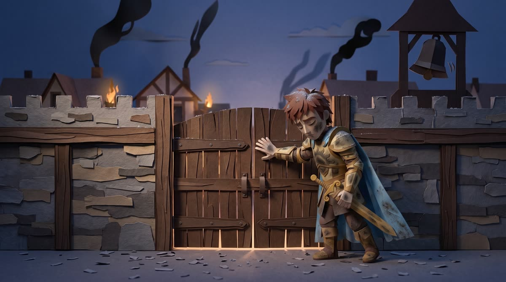
Case study · Papercraft homage
Emberfell II: The Gates
Use case
Just talk to the agent about a storyline. No prompts, no shot list — a conversation
about Arthas and the Culling of Stratholme, and it wrote the script, cast the characters,
picked the right model for each shot, and shot the film.
See how it was builtHide the breakdown

Emberfell II: The Gates
Goal: a ~105-second papercraft homage to the hardest scene in Warcraft III: Reign of Chaos — the Culling of Stratholme, where Arthas orders a plagued city killed while it is still human. Reimagined in cut-paper with original characters and original dialogue: a prince who must close the gates on his own people, the mentor who begs him not to, and the healer who walks away. It references the scenario; it isn’t a copy.
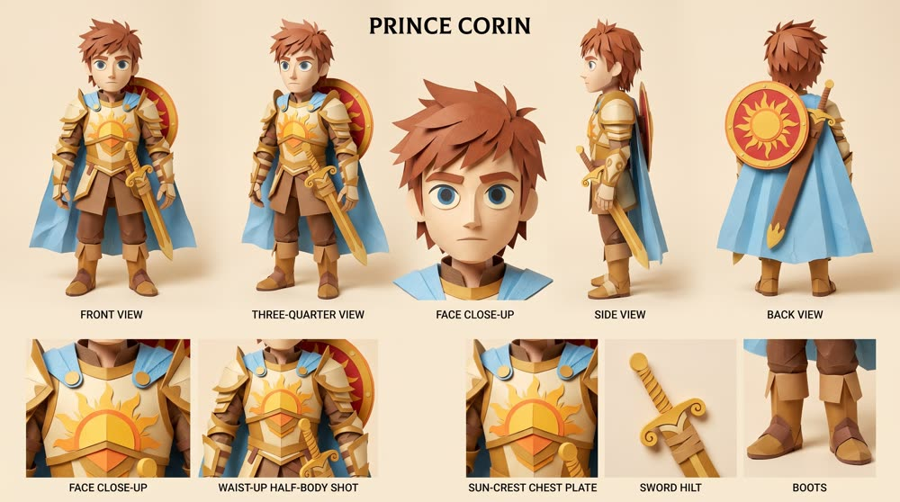
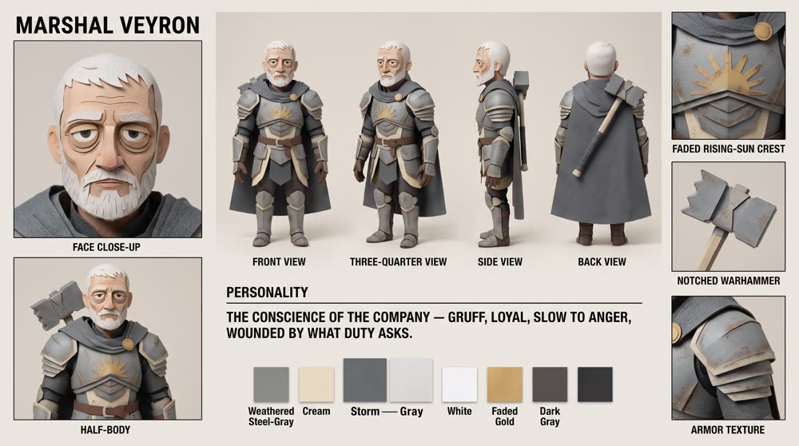
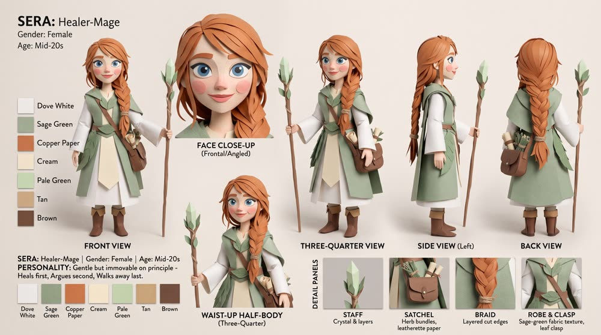
- Lock the cast — Corin carried over from the first film; Veyron and Sera generated as new model sheets from text and saved to the registry.
- Generate 12 keyframes — one approved still per scene, each citing the locked sheets. Approved before paying for any video.
- Cast the model to the shot — 8 acted scenes to Omni
3d-papercraft(faces, dialogue, lip-sync); 4 quiet scenes to Veo 3.1 lite at $0.03/s — ashfall, a spinning pinwheel, the silent aftermath. - Let the clips speak — Omni generates its own dialogue and sound in the same pass. No separate voiceover; a 106-second score sits underneath.
- Assemble — 12 scenes stitched with the native audio at full level and the music bed at 14%.
prompts.txt, and the cheap keyframe was always approved before the ~$1/clip video spend.
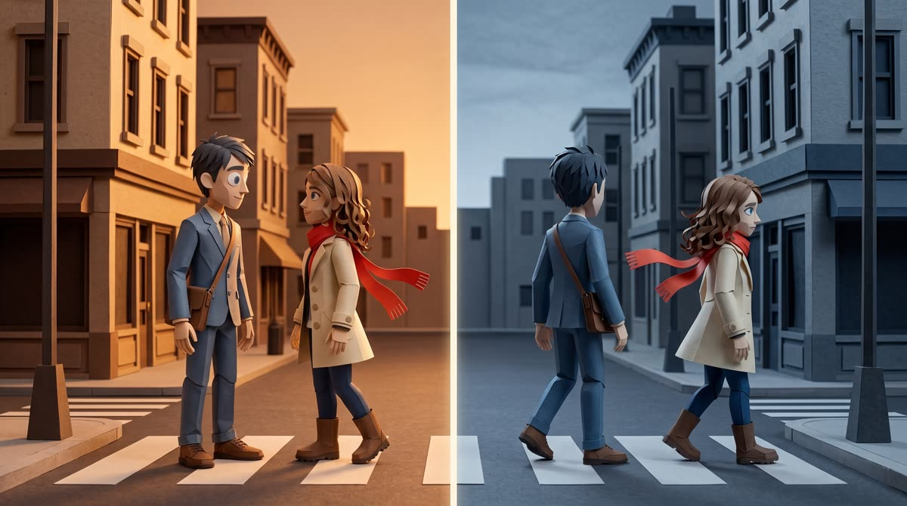
Case study · Reference-video remake
A Second Either Way
Use case
Paste a YouTube link and name your style. “Analyse this video, make something like it
in papercraft, under 2 minutes.” It watched the 5:18 original, broke it into 70 scenes, and
rebuilt the structure with original characters.
See how it was builtHide the breakdown

A Second Either Way
Goal: recreate the structure and pacing of an existing short film (“ONE SECOND LATE”) as a papercraft “sliding-doors” romance — with entirely original characters and paraphrased dialogue, no footage or likenesses copied, and compressed from 5:18 to under 2 minutes.
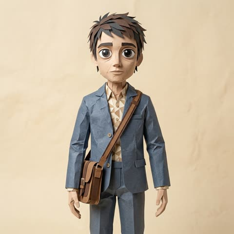
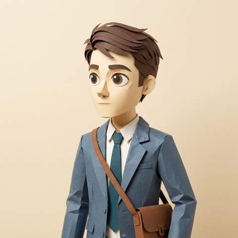
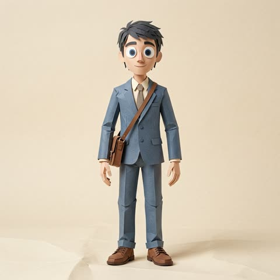
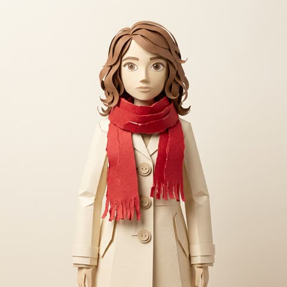
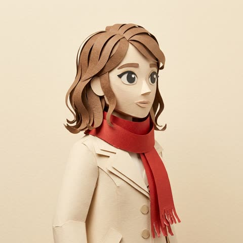
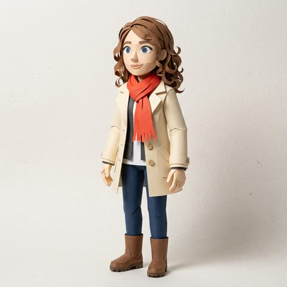
- Analyse the reference — the agent watched the 5:18 original and produced a 70-scene breakdown of its structure, pacing and style, plus a recreation plan. (~$0.17)
- Lock 2 original characters — Eli, and Nora with her signature red scarf (the original film’s meet-cute prop, reinvented) — character sheets to the registry.
- Generate 11 keyframes — approved stills referencing the locked characters.
- Animate to 11 clips — Omni
3d-papercraft, image-to-video, per-clip camera moves (8–10s each). - Voice & music — then a judgement call — voiceover was generated across 3 voices, but on playback the clips’ own Omni audio was better, so the TTS was dropped and the native audio kept.
- Assemble — stitched into the 92-second final cut with the parallel-timeline structure intact.
Video generation
From a single sentence, a start image, or an existing clip — with real, native audio in the same pass.
Omni video
Gemini · core ~$1.03 / 10-second clipWhat you get: a short, finished video clip (up to ~10 seconds) with motion and sound generated together — a product sizzle, a talking explainer, or a scene in a chosen art style. It can also edit a clip you already have: add on-screen text, sound effects, or restyle it, without regenerating from scratch.
- Pick the starting point — a text prompt, one keyframe image, up to five reference images, or an existing video to edit.
- Choose an art style (or keep it photoreal). This is always your call — never picked silently.
- Propose a camera move from 46 tested presets — one clean move per clip.
- Estimate the cost, confirm, and render. The prompt is saved so the exact clip can be reproduced.
generateOmniVideoClip '{
"prompt": "Founder holds the bag to camera, warm light",
"artStyle": "claymation", "cameraMove": "slow-push-in",
"outputPath": "…/clip-01.mp4" }'
Need cinematic B-roll or exact first-and-last-frame reveals instead? A higher-fidelity film engine (Veo) handles those — priced by the second.
Adding text & captions
Text is rendered locally with real fonts — pixel-sharp, Burmese-safe, and free. AI paints beautiful scenes but garbles typography, so the words never touch the AI.
Captions
$0 · rendered locally Myanmar / Thai / Latin — all shaped correctlyWhat you get: timed captions burned onto the finished video, with timing taken from the actual audio. You choose the method by the video’s job — not one blunt default.
Normal mode
- Clean lower-third pill transcript, one line at a time
- Sits in the safe zone, clear of platform buttons
- Perfect for talking-head, tutorials, straightforward explainers
- One key word can glow in your accent colour
Creative mode
- Hero punch-ins — one big word per beat for hooks & hype
- Keyword accent — highlight the 1–2 words that matter
- Location / label stamps at the top for travel & multi-scene
- Text behind the subject — the word sits behind the person as they move
- Transcribe the audio for exact timings (any language, Burmese included).
- Pick the method above that fits the video’s shape and goal.
- Set size, height off the bottom, and the accent colour; mark the words to emphasise.
- Burn it in locally — no cost, audio untouched, and a matching subtitle file saved too.
renderCaptionedVideo '{ "videoPath":"final.mp4",
"cues":[{"start":0,"end":2,"text":"the **VoxCPM** way"}],
"accentColor":"#1b4fd8", "outputPath":"final-cc.mp4" }'
Captions that read the frame first
Text isn’t dropped in a fixed spot and hoped for. Before rendering, the agent inspects the actual video frames and the audio, then decides every attribute so the words fit the shot — legible, on-brand, and never covering a face.
It reads the frames
Where the empty space is, whether the background is bright, dark or busy, and where the subject’s face sits — found by analysing the frames.
It reads the audio
Exact word-by-word timings from the transcript, and which words carry the emphasis — so captions land on the beat.
Position
Placed in the emptiest region (sky, wall, water) — not blind-centre — and kept clear of the face and the platform’s button zone.
Size
A hook word goes big (it can bleed off the frame edge); a transcript line stays modest. Size tracks how much the word matters.
Colour
Sampled against the background — light on dark, dark on light — with the 1–2 key words switched to your brand accent.
Legibility
On a busy or textured background it adds a frosted scrim or pill behind the text so it never gets lost.
Style
Chosen by shot: pill transcript, hero punch-in, an upper location stamp, or the signature text-behind-subject.
Animation
A spring entrance, one line at a time, timed to the audio beats — readable, never a wall of text.
Voiceover
Two routes: a free plain narrator, or an expressive, directed voice you tune line by line.
Free narration — Microsoft Edge voices
$0 · no API key includes Burmese (male & female)What you get: clean, clear narration at no cost — ideal for drafts, high volume, or when a plain read is all you need. You can nudge the speed, volume and pitch, but there’s no acting or emotion.
- Give the script and pick a voice (e.g. Burmese my-female / my-male).
- Optionally adjust rate, volume, pitch.
- Render — free, instantly, saved as a ready audio file.
generateEdgeTTSVoiceover '{ "script":"…",
"voice":"my-female", "outputPath":"vo.wav" }'
Expressive narration — Gemini voices
Gemini · directed ~$0.001 / sentenceWhat you get: a voice that acts. You choose the character, the style, the pace and accent — and you can direct emotion right inside the script with cues like [excited], [pause] or [whispers]. Never a flat read.
| Voice | Gender | Best for |
|---|---|---|
| Kore | Female | Professional, clear |
| Aoede | Female | Warm, friendly, approachable |
| Leda | Female | Soft, gentle |
| Zephyr | Male | Professional, calm narration |
| Puck | Male | Energetic, casual, youthful |
| Charon | Male | Deep, authoritative |
| Fenrir | Male | Strong, dramatic |
| Orus | Male | Mature, wise, trustworthy |
"script":"[excited] This changes everything. [pause] Really.",
"voiceName":"Kore",
"voiceStyle":{"style":"professional","pace":"natural",
"accent":"american_general","audioProfile":"warm, confident"},
"outputPath":"vo.wav" }'
Want the character to speak on screen in their own voice? That’s a talking avatar — next.
Talking avatars, images & music
Talking avatar — a character that speaks
Three ways to make a face speak, chosen by whose voice you want on the mouth:
Images & slides
from ~$0.03 per imageThumbnails, carousels, product shots (26 e-commerce presets from one real photo), logos and social covers — with pixel-perfect text laid over them locally, for free.
Music
~$0.04 per 30 secondsBackground beds, jingles and intros — that duck automatically under your voiceover in the final mix.
What things cost
You only pay the AI providers, per generation — and the studio shows the estimate and enforces a cap before it spends a cent. Local text, captions and free voices cost nothing.
Built like a studio, not a toy
Money moves only with consent
Every project has a budget cap and a spend ledger. The estimate shows first; the cap is enforced in code, so it physically can’t overspend.
Consistency is engineered
Characters, products, logos and voices are made once and locked. The same face and voice carry across a whole campaign.
Proof stays real
The studio is hard-blocked from inventing testimonials, stats or press. Your numbers, verbatim — or nothing. Every job keeps a record of exactly how it was made.